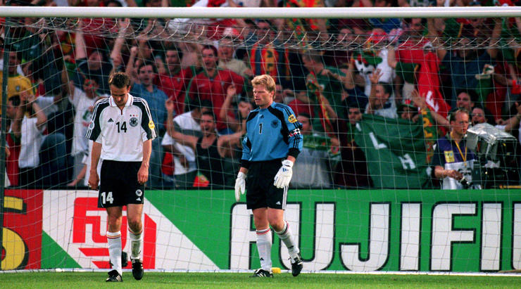

学校足球队主教练韩泽山老师认为国安班的到来给校队带来了很大帮助：“尽管由于一些场地的限制，我们（校队和中赫国安梯队）平时不能在一起训练，但是双方可以比赛。通过比赛，我们校队的队员也从中赫国安的小队员身上学到了许多，技战术的配合、在球场上的意识以及在球场上的团结性都有所提升。”此外，在寒暑假期间，牛栏山一中实验学校足球队的队员还可以前往中赫国安基地，与中赫国安的青训梯队一同训练。

2017年，中赫国安足球俱乐部与牛栏山一中实验学校携手创建“中赫国安班”，俱乐部2002、2003年龄段梯队作为第一批队员进入“国安班”学习，小球员们上午在学校学习初中文化知识，下午回到青训基地进行足球训练。
长久以来，我国职业运动员的培养容易走向成长的不平衡——精湛了青少年运动员运动技能的同时也带来了文化素质的缺失和与同龄人的隔绝。
如今，“体教结合”的呼声日益高涨，而“中赫国安班”的创立不失为一种探索：“国安班”的球员是否可以在踢球的同时不必放弃学业？职业与学业，这对传统意义上的鱼和熊掌，究竟能否兼得？
五月末的北京，太阳用不知疲倦的炙烤宣示着炎夏的来临。下午三点，室外仍然酷热难耐，阳光把球场的草皮灼得发烫，也蒸腾出青草的阵阵沁香。16岁的苏铮和伙伴们鱼贯而入，围拢到教练身边，听取训练安排。
这是他来到“国安班”的第十个月；
这是他踢足球的第十年。
苏铮出生在一个球迷家庭，父亲是中赫国安的铁杆粉丝，热爱足球的父亲也给了幼年苏铮最初的足球启蒙。
进入俱乐部是半职业化训练的开端。每天放学后，当其他同学或嬉闹玩耍或匆匆回家时，苏铮都要来到球场，和俱乐部里同年龄段的佼佼者一起训练两小时，这样的日子持续了两年。初二时，在比赛中表现优异的苏铮听从了教练的建议，决定走上职业化道路。
2017年的7月25日，中赫国安U16梯队正式组建。U16主教练、前国脚翟飙介绍，U16梯队的球员来源广泛，既有像苏铮这样土生土长的北京孩子，也有来自全国各地的足球苗子：
来自五湖四海的队员一方面增加了球队的包容性，另一方面，球员们正值十五六岁的年纪，天性的好动与地域的差异让队员间难免产生摩擦，这也对球队管理提出了挑战。
“刚来北京时普通话说得不好，都讲自己的方言，互相听不懂，也老吵架。”谈到初来乍到时和队友闹出的不愉快，来自湖北的刘石开不好意思地挠了挠头。
如今队伍的融洽氛围得来不易，建队以来气氛的变化都要归功于主教练、被尊称为“翟指”的翟飙。
谈到队伍人员构成的多元，翟指说：“用毛主席的话来讲，我们是从五湖四海走到一起来的。”
2018年全国青少年男子足球U16锦标赛第七名；
2018年中国足球协会杯（男子U-16组）第一阶段第六名，将在第二阶段参加上半区决赛；
2018全国青少年足球超级联赛（青超联赛）U17年龄段，已进行六轮比赛，战绩五胜一负。
对于一支刚刚成立十个月的队伍而言，取得这样的战绩已属不易。即使是数月之后，苏铮依然能够清晰地忆起比赛的细节。谈起自己作为“关键先生”的表现，小伙子笑得很是灿烂，欣喜与自豪溢于言表：
“有两场关键比赛都是对阵长春亚泰。第一次是60多分钟时我替补上场，我进了球，1-0领先，后来1-1被对方扳平了，到了80多分钟时，我传中导致对方乌龙，最后2-1胜利。”
之后，2018全国青少年足协杯赛U16组，中赫国安U16再一次遭遇长春亚泰。对于中赫国安而言，这是一场输不起的比赛——一旦输球，中赫国安将失去本区的决赛资格，被降级至下半区。因此，中赫国安迫切地需要一场胜利来保住席位，如不能直取胜利而是被迫点球决胜负，极大的不确定性无疑会为前途蒙上一层阴影。 不知是否由于这是场决定命运的比赛而让队员们背负了过多压力，赛场上，两队都迟迟未能打开局面，眼看时间将尽，而双方防守固若金汤。直到第87分钟，苏铮一脚破门送上绝杀，帮助中赫国安顺利留在了上半区。
翟指还比较满意弟子们的表现，但也承认与强队仍存差距：“（在全国范围内比较），我们的队伍现在处在中游的位置，毕竟我们组队的时间稍晚一些。国内的其他球队，组队时间长的都已经有四五年了，而我们只有十个月，现在还在追赶。”
翟指对队员们的训练和生活各方面都十分严格：“比如要求你做到百分之百的冲刺，你来80%都是不可以的。在训练场上，就是要令行禁止。足球是什么？是和平年代的战争，下达命令就要执行。”
“我踢球的风格偏南美，非常喜欢内马尔。”——苏铮
“受伤时很着急，怕（因此）踢不到职业俱乐部。”——刘石开
“回家时间很少，也很想家。但是走职业（路线），必须克服。”——贾昕岳
“国安班”的每一名小球员都有一个球星梦，教练也期望着从这里能够走出未来的足球明星。然而逐梦之路注定道阻且长，等待他们的不仅是技术的磨砺、也有伤病的折磨与心理的考验。
苏铮身披10号球衣——贝利、马拉多纳、普拉蒂尼、巴乔，这些伟大的名字让绿茵场上10号的意义变得与众不同——代表了整个球队的灵魂和核心。“刚开始踢前腰，后来因为跑得太快了就踢边锋了。”
刘石开曾忍受伤病的折磨，长期训练让他的左膝半月板二级磨损。当时他正处在由业余转职业的关键期，一个月的恢复期显得格外漫长与灰暗：“没有专业的队医，怕伤好了踢不上球，在家也发脾气。”即使后来成功转入职业梯队，伤病的影响仍然如影随形。
对于背井离乡、从沈阳来到北京踢球的贾昕岳而言，同龄人享受的家庭欢乐则成为了奢望。“大部分时间都在北京，如果俱乐部放假或者是需要回家办手续，才可以回家。”被问及是否想家时，爽朗的贾昕岳答道：“肯定会想。但是走职业（路线），必须克服。中赫国安是个很大的平台，自己选择了，不能因为想家而放弃。”
走在牛栏山一中实验学校的校园里，绿色的中赫国安队服与长年训练馈赠的黝黑肤色让国安班的学生显得格外突出。在这里，U16梯队的队员们被分入中赫国安1班和中赫国安2班两个班级，学习初三年级的语文、数学、英语、物理、政治、历史六门课程。
谈及中赫国安与学校合作的原因，牛栏山一中实验学校德育处主任李海宝老师将其总结为“资源共享”：“中赫国安需要我们的优质资源来为球员提供文化教育，学校也需要中赫国安的优质资源来发展校园足球，双方因此一拍即合。”
学校足球队主教练韩泽山老师认为国安班的到来给校队带来了很大帮助：“尽管由于一些场地的限制，我们（校队和中赫国安梯队）平时不能在一起训练，但是双方可以比赛。通过比赛，我们校队的队员也从中赫国安的小队员身上学到了许多，技战术的配合、在球场上的意识以及在球场上的团结性都有所提升。”此外，在寒暑假期间，牛栏山一中实验学校足球队的队员还可以前往中赫国安基地，与中赫国安的青训梯队一同训练。
从中获益的不仅是校队，“国安班”的到来也让这所本就以校园足球而闻名的学校有了更加浓厚足球氛围。同学们参与班级联赛、校级联赛的积极性更高了，李海宝老师也提到，学校计划在下一年的校园足球联赛中将“国安班”学生打散编入普通班级，让普通学生获得与高水平球员交流技艺的机会。
而到名校读书、过与同龄人一样的校园生活，也是中赫国安梯队的小球员此前未曾想象过的。刘石开之前在体校就读，普通中学生井井有条的作息规律与牛一实验优美的校园环境都让他感到兴奋：“作息比在体校时更有规律，校园环境也好了太多。”
如果说“体教结合，全面育人”是美好的理想，那么队员学习水平参差不齐、学习欲望难如人意便是“国安班”略显尴尬的现实。
“和普通班级的学生相比，‘国安班’的学生沟通能力更强，性格也比较好，”负责“国安班”数学教学的赵贺锋老师说道，“但是学生的接受能力、学习欲望的确差异很大。”
中赫国安U16梯队的队员有的已经完成了初中课程的学习，有的文化程度还停留在初一水平，这也给老师的授课带来了很大难度。
“一节课，如果能让所有的学生都听明白了，这节课的课程设置上面会困难特别大，”赵老师坦言，学生的整体水平让他无法按照原先计划讲授初三内容，“后来我调整了计划，从初一的内容，甚至从六年级的内容拉出来一部分开始讲，慢慢地加大难度，这样，跟着老师走的学生也越来越多。”
与数学老师降低难度、循序渐进的方法不同，英语老师林荣吸引学生兴趣的方法是把课程内容与足球结合起来，最大程度地贴近“国安班”的日常生活和运用需要。
然而，比起知识的习得，对于“国安班”的学生而言，更加重要也更为艰难的是观念的转变。2017年9月之前，梯队在香河足球训练基地训练生活。受地理位置所限，俱乐部很难为梯队队员配备相应的教学资源，队员们文化课的教育情况比较贫乏。“国安班”最初组建时，部分队员认为“学习无用”，牛栏山的老师也反映“坚持学习的人并不占多数”。
为了让学生回归课堂，老师们也用尽了心思。作为“体教结合”这条路上的拓荒者，他们在摸索中不断前行，经过近一年的努力，有越来越多的学生能够“坐得住、听得进”，回到了课堂。
苏铮认为文化教育能让他们变得更充实：“语文的学习，英语的学习，不管是在国内国外，还是场上场下，都能让我们沟通得更好。数学能开阔我们的思维。足球除了是用脚踢，其实实际上是在用脑子踢。”
孩子们身上发生的变化令人欣喜，但赵老师心里清楚，他们现在完成的不过是“万里长征第一步”。无论是降低教学难度还是改变教学手段，都是“术”之层面的实践，虽然能让学生坐得住、听得进、不再抗拒学习，但也只是治“标”，而要想治“本”，将消极的“要我学”变为积极的“我要学”，他们还需要“道”的引领。“我觉得‘国安班’的孩子们需要专业职业规划老师的引导，”赵老师说，“我们（学科教师）的能力毕竟有限，需要有专业的老师教他们做职业规划，让孩子们清楚自己现在所处的是什么位置、应该做些什么。”
以往，中赫国安都是在队员15岁以后、也就是完成九年义务教育后再将其招入青训梯队进行职业化训练，直到中国足协规定俱乐部需建立更小年龄梯队之后，青训梯队才有了硬性的教育方面的需求，“国安班”的模式也是俱乐部为队员提供文化教育的首次尝试；同样，作为“第一个吃螃蟹”的牛栏山一中，“体教结合”模式下对课程设置、教学管理等方面的初步探索也难免存在不成熟之处。
中赫国安青少部体系发展经理韩涛介绍，俱乐部和牛栏山一中签署了三年的首期“国安班”协议，今年9月，中赫国安05、06梯队将入校读初一。俱乐部和学校都希望在借鉴现有经验教训的基础上对“国安班”的教学模式进行优化，从而让孩子们更好地学习知识、感受校园氛围，并且在时间不冲突的情况下，更多地参与学校组织的社会实践活动，更多地接触社会、了解社会。
“足球是和平年代的战争。”翟指一语道破了足球的残酷。这种残酷不仅体现在足球场上的激烈拼抢中，更体现在职业球员极高的淘汰率上。同其他竞技项目一样，足球球员的层层选拔也遵循“金字塔”规律，队员们即使已经进入了职业梯队、成为了同龄人中的佼佼者，最终能成为职业球员的选手仍是凤毛麟角。
目前，中赫国安俱乐部计划在一至两年后为U16梯队开设低级别的教练员培训班与医疗保障学习班，为最终未能走上球员道路的队员提供更多的职业选择。
几天前，翟指导和队员们共同观看了一部影片，讲述的是梅西和他的小伙伴的故事。在电影中有这样的一幕，令翟指导印象颇深：
“我也想告诉怀揣球星梦、职业球员梦的孩子们，每个人的生活是不一样的，可能你成为球星、成为职业球员的几率不多，但是你的生活还得继续，即使是成为了职业球员，足球生涯也毕竟短暂，运动员终有一天要退役、面对这个社会。所以一方面我们要为梦想努力、青春无悔，另一方面，我们也要学更多的知识，为将来做好准备。”
——翟飙 | 中赫国安U16梯队主教练
Q：如何评价中赫国安班“体教结合”？
韩涛 | 北京中赫国安俱乐部青少部体系发展经理
我们希望是
两条腿走路，在保证球员的训练质量、比赛的场次以外，对文化课着重加强。比如说考试没有达标，梯队的教育辅导员拥有一票否决权，不经过主教练的同意，就直接让孩子停训，把文化课的所缺的东西补回来。通过这些方方面面能够让孩子认识到，除了作为一个在国安踢球的运动员以外，同时也不要忘了他另外一个身份还是个学生。
李晨明 | 中央电视台体育频道主持人、解说员
俱乐部和学校的合作能够吸引更多球员加入职业训练的同时兼顾学业，对于俱乐部来讲的话，当然需要吸纳越来越多的后备人才，基数越大，在今后选拔出优秀人才的这种可能性才越高。青训其实
做的是教育，而不只是做体育，实际上应该是教育行业告诉孩子们怎样通过足球体会快乐。
王军 | 《体坛周报》资深记者、体育产业研究专家
肯定有一定的积极影响，但这种影响是比较有限的。在重点中学上课，不代表拥有重点中学学习能力，学习能力和学习场所是两个概念。“体教结合”本身是一个伪命题，难道踢球的人就不应该学习？
育人永远是第一位的，踢球才是第二位的，这样才能够真正提高中国足球的素质和水平。也才有望解决中国足球当下的很多问题，利己主义、拜金主义等等。
李宇航 | 前牛栏山一中校队队长、首都体育学院体育教育专业足球专项大二在读
学校为俱乐部的小球员提供接受良好教育的环境，俱乐部为学校提供高水平的小球员来帮助学校在各种比赛中取得好成绩。对于学校来说更多是培养相应的足球特长生，
提升这部分特长生的能力，但是对于普通学生来讲可能帮助甚微。
中国足球青训展望
中日青训几乎同一时间起步，到如今成果却天差地别。近年来，中国俱乐部青训队、学校校队大比分输给外国青年队的新闻层出不穷。人们在感叹足球水平的差距时，也在思考：中国青训的问题出在哪里？带着这个问题，河北华夏幸福俱乐部调查了队内青训球员和日本川崎前锋队的青训队员，得到了这样的结果。
当问及“你为什么踢足球”时，中国小球员的回答大多是“喜欢运动，喜欢足球”，而日本小球员的答案是“受父亲、哥哥的影响”。这在一定程度上说明日本的足球氛围更浓，更能激励孩子投身到足球运动中。
而日本足球人口数量的优势，很大程度上要归功于日本高中足球联赛。日本高中足球联赛全称为“日本高等学校足球选手权大会”，在联赛中表现好的高中球员，可以获得职业队的橄榄枝。早年的川口能活、中村俊辅、中田英寿，近年的本田圭佑、浅野拓磨等等，都是从高中联赛走出去的球星。
只不过，这些人并非真的仅依靠天赋就能获得职业俱乐部的垂青，他们往往从小就一边完成学业一边接受专业青训，而从青训队淘汰下来之后，球员一般都会入读高中。
中国也有自己的“高中足球联赛”。效仿日本从各县挑选出48支球队，中国高中足球联赛将全国分为四个大区，每区16队，共64队。相比之下，日本参赛的48支球队，是在本县内经过淘汰赛重重选拔脱颖而出的，实际参加预选赛的超过2000支球队。而中国高中足球联赛的报名规程写道：“如果参赛队数不足16支，承办赛区单位（或省市）可优先递补一支球队。如还不足，则依据上届联赛分区赛名次靠前球队所在省市依次递补。”然而在2016年，东南区仍只有12只球队参赛，联赛面临着尴尬的境地。“中国高中足球联赛”的官方微博，也仅有453人关注，相比日高联赛动辄四万的上座率，足球人口的差距也由此体现出来。
2000年欧洲杯小组赛出局后，德国人意识到了足球人才青黄不接的危机。于是，为了培养接班德国足球的青年人才，德国人对原有的青训系统进行了完善。
德国采用“俱乐部青训+足协青训”的模式，制定了《德国足协青少年发展计划》，并投入1亿欧元在全国设立了366个德国足协精英中心。精英中心的任务就是发现和挖掘当地有潜力的年轻球员，并让他们每周一天进行科学的足球训练。在精英中心接受训练的1.4万名年龄在11岁到14岁之间的小球员之中有天赋的选手，会被精英中心送至国内各职业俱乐部的梯队进行青训。依靠这一系统，根据2017年德国足协最新公布的数字，德国最新的男、女注册球员总数为704.3万人，相当于德国每11个人当中就有一位注册球员，其中青少年球员超过了180万。除了精英中心之外， 46所青少年足球运动中心，29所足球精英学校和108514支青年球队都为热爱足球的德国青少年提供了踢球的场所。

德国的职业俱乐部也各自建立了不同年龄层次的梯队。以2016-2017赛季异军突起的RB莱比锡队为例，队内构建了从U8到U23之间12支不同年龄层次的梯队。梯队的教练通常选择退役不久、希望走上教练道路的老将，他们丰富的经验会帮助球员成长。U23队目前在德甲第四级别联赛，还有诸多梯队分布在德国北部至莱比锡市的各级联赛中。除莱比锡队以外，其他球队的青年梯队也参与到半职业联赛和业余联赛中练级。2017年中国U20队曾希望参加德国第四级别联赛，就是看准了和同一年龄层次球员竞技的机会，只可惜最终未能成行。

德国拥有庞大的足球人口，而最终能够成为职业球员的人十分有限，所以，在德国，足球人才的竞争压力相较于中国只大不小。为了让大多数最终未能走上职业道路的球员有机会获得更好的发展，德国青训十分重视青年球员的文化课教育。在俱乐部梯队，小球员从12岁起，每周有四次常规训练，同时还需要完成30至34个小时的文化课学习。今年23岁的德国未来之星基米希，高中毕业时拿到了1.7的高分，换算成中国的高考分数，相当于585分左右。那么，德国的小球员是如何兼顾学业与训练的呢？原来，德国中小学生的校园生活不像中国学生一样往往被课程与作业占满，他们下午通常有充足的课余时间，这让学生可以在兼顾学业的同时发展自己的足球爱好。
繁荣的青训体系，让德甲联赛以25.99岁的平均年龄，成为英西法德意五大联赛中平均年龄最小的联赛。
面对人才井喷的局面，难怪前沙尔克04体育主管黑尔特这样感慨：“既然自己就能培养出身价3000万的德拉克斯勒，为什么还要去转会市场买呢？”